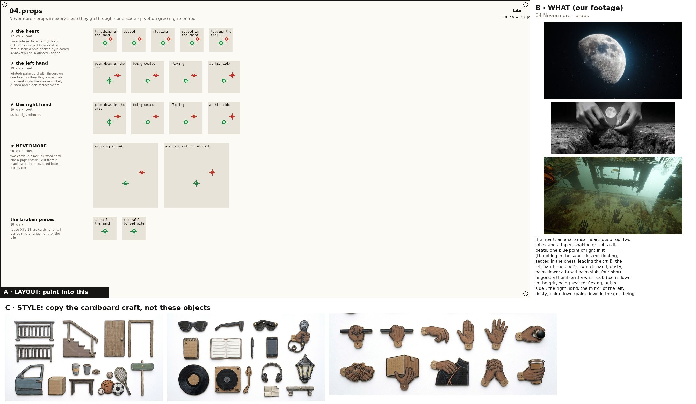
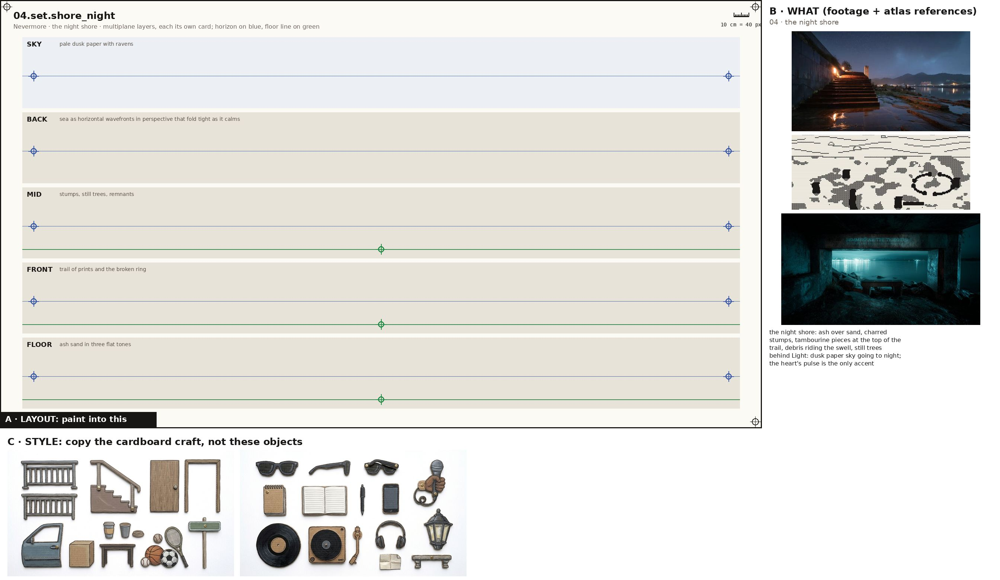
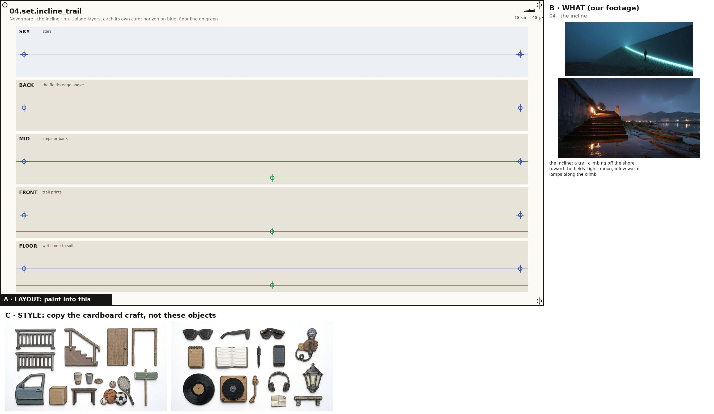
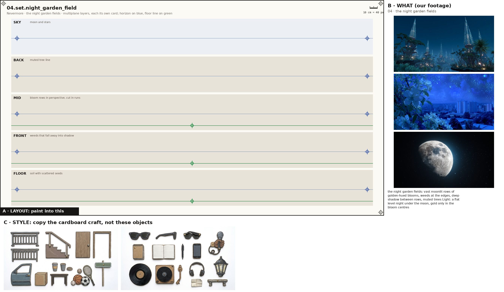
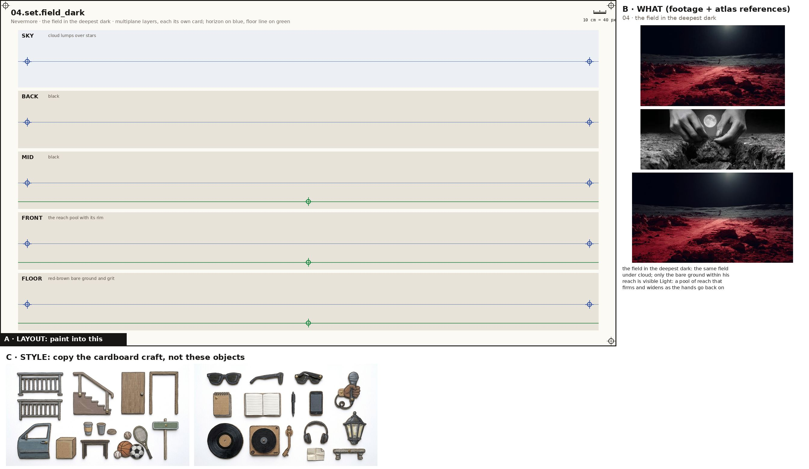
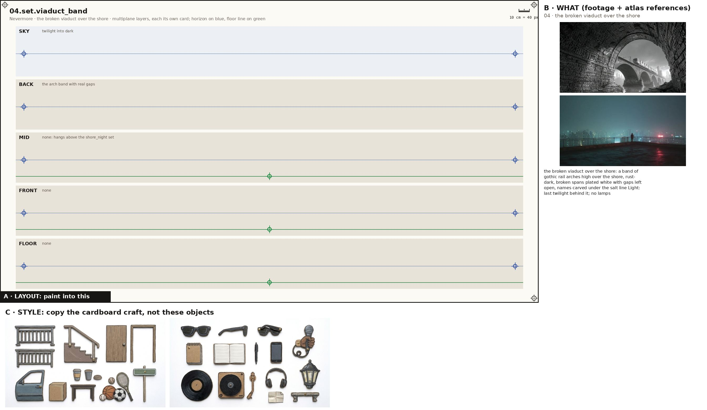
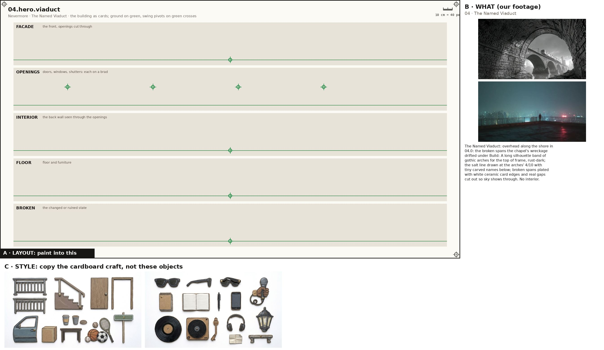
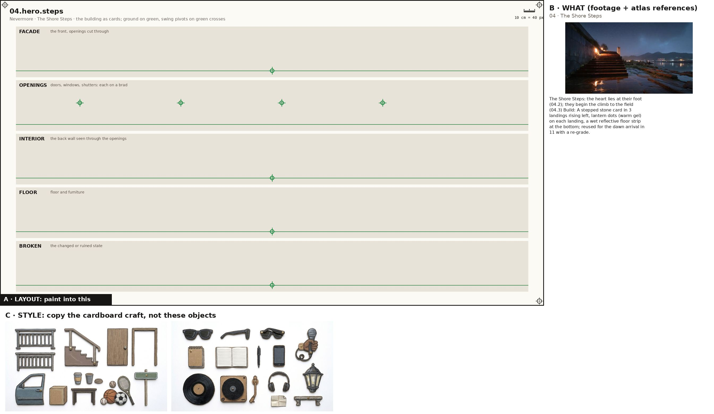
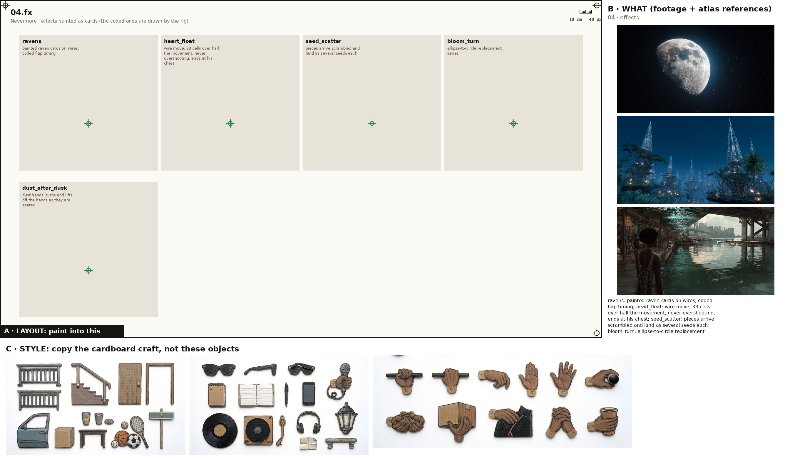

One image + one prompt each. The characters' action sheets are in the cast above; their costume kits are on the character kits page.

Props, every state props
Paint one sheet of cut-out puppet parts for a paper-puppet film, using the attached image. Panel A is the exact layout, panel B is our footage for these props (reference: copy the object, not the photo style), panel C is the style. STYLE (panel C): flat cards cut from corrugated cardboard, gouache with confident ink linework, the flutes faintly showing through the paint, a thin raw kraft-brown cut edge round every card, brass split-pin brads; shot flat-on, even light, no shadows, no perspective. Copy the craft from C, not the clothes in it. WHAT (panel B): the props of the poem 'Nevermore', one row each, every state of a prop in its own cell, left to right: the heart: an anatomical heart, deep red, two lobes and a taper, shaking grit off as it beats; one blue point of light in it (throbbing in the sand, dusted, floating, seated in the chest, leading the trail); the left hand: the poet's own left hand, dusty, palm-down: a broad palm slab, four short fingers, a thumb and a wrist stub (palm-down in the grit, being seated, flexing, at his side); the right hand: the mirror of the left, dusty, palm-down (palm-down in the grit, being seated, flexing, at his side); NEVERMORE: the word NEVERMORE, first laid down as ink over the flat sea, then cut as paper out of the dark field (No still in the index fits; designed from the treatment and the world module.) (arriving in ink, arriving cut out of dark); the broken pieces: 03's rim arcs, skin and jingles, lying open in the ash-covered sand (a trail in the sand, the half-buried pile); the ravens: three to five black ravens, wings wide (No still in the index fits; designed from the treatment and the world module.) (circling, flying ahead up the trail); puzzle pieces of faith: handcrafted wooden puzzle pieces with gilded edges that lock, scramble, then scatter as seeds (No still in the index fits; designed from the treatment and the world module.) (handcrafted, scrambled, scattered as mustard seeds); the golden blooms: golden flower heads on tall stems with paper-pale centres (closed, opening, facing him); the expired wildfires: four charred stumps with torn tops, ash around them (cold, ashed); the lanterns on the shore steps: small iron lanterns with warm flames on each landing of the shore steps (lit, flicker). Paint each state as a flat cardboard prop card at the size its cell gives, the same object across its row; a brass brad on the green cross (its pivot); where there is a red cross, that is where a hand grips it. LAYOUT (panel A): paint one card inside each grey ghost, in the same place, size and angle, inside its dashed outline; a brass brad exactly on every green cross; each red cross must fall inside that card's rounded end. NEVER draw a pelvis, hip, shorts or briefs card (the thighs end in a rounded seat that tucks under the hem), a sleeveless vest, lace-up boots, or sunglasses painted onto a head. OUTPUT: only the painted cards on a pure white 2048x1152 sheet laid out as panel A. Leave out panels B and C, the crosses, labels, ruler, dashed lines and ghosts.

the night shore set
Paint one sheet of cut-out puppet parts for a paper-puppet film, using the attached image. Panel A is the exact layout, panel B is our footage for this place (reference: copy the place, not the photo style), panel C is the style. STYLE (panel C): flat cards cut from corrugated cardboard, gouache with confident ink linework, the flutes faintly showing through the paint, a thin raw kraft-brown cut edge round every card, brass split-pin brads; shot flat-on, even light, no shadows, no perspective. Copy the craft from C, not the clothes in it. WHAT (panel B): the night shore: ash over sand, charred stumps, tambourine pieces at the top of the trail, debris riding the swell, still trees behind Light: dusk paper sky going to night; the heart's pulse is the only accent. SHEET: the place as five separate flat cardboard layers, one per band, painted to stack front to back in a multiplane rig: SKY: pale dusk paper with ravens; BACK: sea as horizontal wavefronts in perspective that fold tight as it calms; MID: stumps, still trees, remnants; FRONT: trail of prints and the broken ring; FLOOR: ash sand in three flat tones. Each layer is its own card with a clean cut top edge and transparent gaps where the layer behind shows through; keep the horizon on the blue line and the floor on the green line in every band so they register. LAYOUT (panel A): paint one card inside each grey ghost, in the same place, size and angle, inside its dashed outline; a brass brad exactly on every green cross; each red cross must fall inside that card's rounded end. OUTPUT: only the painted cards on a pure white 2048x1152 sheet laid out as panel A. Leave out panels B and C, the crosses, labels, ruler, dashed lines and ghosts.

the incline set
Paint one sheet of cut-out puppet parts for a paper-puppet film, using the attached image. Panel A is the exact layout, panel B is our footage for this place (reference: copy the place, not the photo style), panel C is the style. STYLE (panel C): flat cards cut from corrugated cardboard, gouache with confident ink linework, the flutes faintly showing through the paint, a thin raw kraft-brown cut edge round every card, brass split-pin brads; shot flat-on, even light, no shadows, no perspective. Copy the craft from C, not the clothes in it. WHAT (panel B): the incline: a trail climbing off the shore toward the fields Light: moon, a few warm lamps along the climb. SHEET: the place as five separate flat cardboard layers, one per band, painted to stack front to back in a multiplane rig: SKY: stars; BACK: the field's edge above; MID: steps or bank; FRONT: trail prints; FLOOR: wet stone to soil. Each layer is its own card with a clean cut top edge and transparent gaps where the layer behind shows through; keep the horizon on the blue line and the floor on the green line in every band so they register. LAYOUT (panel A): paint one card inside each grey ghost, in the same place, size and angle, inside its dashed outline; a brass brad exactly on every green cross; each red cross must fall inside that card's rounded end. OUTPUT: only the painted cards on a pure white 2048x1152 sheet laid out as panel A. Leave out panels B and C, the crosses, labels, ruler, dashed lines and ghosts.

the night garden fields set
Paint one sheet of cut-out puppet parts for a paper-puppet film, using the attached image. Panel A is the exact layout, panel B is our footage for this place (reference: copy the place, not the photo style), panel C is the style. STYLE (panel C): flat cards cut from corrugated cardboard, gouache with confident ink linework, the flutes faintly showing through the paint, a thin raw kraft-brown cut edge round every card, brass split-pin brads; shot flat-on, even light, no shadows, no perspective. Copy the craft from C, not the clothes in it. WHAT (panel B): the night garden fields: vast moonlit rows of golden-hued blooms, weeds at the edges, deep shadow between rows, muted trees Light: a flat level night under the moon, gold only in the bloom centres. SHEET: the place as five separate flat cardboard layers, one per band, painted to stack front to back in a multiplane rig: SKY: moon and stars; BACK: muted tree line; MID: bloom rows in perspective, cut in runs; FRONT: weeds that fall away into shadow; FLOOR: soil with scattered seeds. Each layer is its own card with a clean cut top edge and transparent gaps where the layer behind shows through; keep the horizon on the blue line and the floor on the green line in every band so they register. LAYOUT (panel A): paint one card inside each grey ghost, in the same place, size and angle, inside its dashed outline; a brass brad exactly on every green cross; each red cross must fall inside that card's rounded end. OUTPUT: only the painted cards on a pure white 2048x1152 sheet laid out as panel A. Leave out panels B and C, the crosses, labels, ruler, dashed lines and ghosts.

the field in the deepest dark set
Paint one sheet of cut-out puppet parts for a paper-puppet film, using the attached image. Panel A is the exact layout, panel B is our footage for this place (reference: copy the place, not the photo style), panel C is the style. STYLE (panel C): flat cards cut from corrugated cardboard, gouache with confident ink linework, the flutes faintly showing through the paint, a thin raw kraft-brown cut edge round every card, brass split-pin brads; shot flat-on, even light, no shadows, no perspective. Copy the craft from C, not the clothes in it. WHAT (panel B): the field in the deepest dark: the same field under cloud; only the bare ground within his reach is visible Light: a pool of reach that firms and widens as the hands go back on. SHEET: the place as five separate flat cardboard layers, one per band, painted to stack front to back in a multiplane rig: SKY: cloud lumps over stars; BACK: black; MID: black; FRONT: the reach pool with its rim; FLOOR: red-brown bare ground and grit. Each layer is its own card with a clean cut top edge and transparent gaps where the layer behind shows through; keep the horizon on the blue line and the floor on the green line in every band so they register. LAYOUT (panel A): paint one card inside each grey ghost, in the same place, size and angle, inside its dashed outline; a brass brad exactly on every green cross; each red cross must fall inside that card's rounded end. OUTPUT: only the painted cards on a pure white 2048x1152 sheet laid out as panel A. Leave out panels B and C, the crosses, labels, ruler, dashed lines and ghosts.

the broken viaduct over the shore set
Paint one sheet of cut-out puppet parts for a paper-puppet film, using the attached image. Panel A is the exact layout, panel B is our footage for this place (reference: copy the place, not the photo style), panel C is the style. STYLE (panel C): flat cards cut from corrugated cardboard, gouache with confident ink linework, the flutes faintly showing through the paint, a thin raw kraft-brown cut edge round every card, brass split-pin brads; shot flat-on, even light, no shadows, no perspective. Copy the craft from C, not the clothes in it. WHAT (panel B): the broken viaduct over the shore: a band of gothic rail arches high over the shore, rust-dark, broken spans plated white with gaps left open, names carved under the salt line Light: last twilight behind it; no lamps. SHEET: the place as five separate flat cardboard layers, one per band, painted to stack front to back in a multiplane rig: SKY: twilight into dark; BACK: the arch band with real gaps; MID: none: hangs above the shore_night set; FRONT: none; FLOOR: none. Each layer is its own card with a clean cut top edge and transparent gaps where the layer behind shows through; keep the horizon on the blue line and the floor on the green line in every band so they register. LAYOUT (panel A): paint one card inside each grey ghost, in the same place, size and angle, inside its dashed outline; a brass brad exactly on every green cross; each red cross must fall inside that card's rounded end. OUTPUT: only the painted cards on a pure white 2048x1152 sheet laid out as panel A. Leave out panels B and C, the crosses, labels, ruler, dashed lines and ghosts.

The Named Viaduct hero
Paint one sheet of cut-out puppet parts for a paper-puppet film, using the attached image. Panel A is the exact layout, panel B is the atlas reference for this building (copy the building, not the photo style), panel C is the style. STYLE (panel C): flat cards cut from corrugated cardboard, gouache with confident ink linework, the flutes faintly showing through the paint, a thin raw kraft-brown cut edge round every card, brass split-pin brads; shot flat-on, even light, no shadows, no perspective. Copy the craft from C, not the clothes in it. WHAT (panel B): The Named Viaduct: overhead along the shore in 04.0: the broken spans the chapel's wreckage drifted under Build: A long silhouette band of gothic arches for the top of frame, rust-dark; the salt line drawn at the arches' 4/10 with tiny carved names below; broken spans plated with white ceramic card edges and real gaps cut out so sky shows through. No interior.. SHEET: the building as separate flat cardboard cards, one per band: the FACADE with its window and door holes cut clean through; the OPENINGS (doors, shutters, windows) as their own cards on a brass brad at the green cross so they swing; the INTERIOR back wall seen through the openings; the FLOOR and furniture; and its BROKEN or changed state where the poem has one. Keep the ground on the green line in every band so the cards register. LAYOUT (panel A): paint one card inside each grey ghost, in the same place, size and angle, inside its dashed outline; a brass brad exactly on every green cross; each red cross must fall inside that card's rounded end. OUTPUT: only the painted cards on a pure white 2048x1152 sheet laid out as panel A. Leave out panels B and C, the crosses, labels, ruler, dashed lines and ghosts. No people on this sheet.

The Shore Steps hero
Paint one sheet of cut-out puppet parts for a paper-puppet film, using the attached image. Panel A is the exact layout, panel B is the atlas reference for this building (copy the building, not the photo style), panel C is the style. STYLE (panel C): flat cards cut from corrugated cardboard, gouache with confident ink linework, the flutes faintly showing through the paint, a thin raw kraft-brown cut edge round every card, brass split-pin brads; shot flat-on, even light, no shadows, no perspective. Copy the craft from C, not the clothes in it. WHAT (panel B): The Shore Steps: the heart lies at their foot (04.2); they begin the climb to the field (04.3) Build: A stepped stone card in 3 landings rising left, lantern dots (warm gel) on each landing, a wet reflective floor strip at the bottom; reused for the dawn arrival in 11 with a re-grade.. SHEET: the building as separate flat cardboard cards, one per band: the FACADE with its window and door holes cut clean through; the OPENINGS (doors, shutters, windows) as their own cards on a brass brad at the green cross so they swing; the INTERIOR back wall seen through the openings; the FLOOR and furniture; and its BROKEN or changed state where the poem has one. Keep the ground on the green line in every band so the cards register. LAYOUT (panel A): paint one card inside each grey ghost, in the same place, size and angle, inside its dashed outline; a brass brad exactly on every green cross; each red cross must fall inside that card's rounded end. OUTPUT: only the painted cards on a pure white 2048x1152 sheet laid out as panel A. Leave out panels B and C, the crosses, labels, ruler, dashed lines and ghosts. No people on this sheet.

Painted effects fx
Paint one sheet of cut-out puppet parts for a paper-puppet film, using the attached image. Panel A is the exact layout, panel B is our footage for the mood, panel C is the style. STYLE (panel C): flat cards cut from corrugated cardboard, gouache with confident ink linework, the flutes faintly showing through the paint, a thin raw kraft-brown cut edge round every card, brass split-pin brads; shot flat-on, even light, no shadows, no perspective. Copy the craft from C, not the clothes in it. WHAT: the poem's painted effects, one per cell, as flat cardboard cards that a cut-out film moves in front of the camera: ravens: painted raven cards on wires, coded flap timing; heart_float: wire move, 33 cells over half the movement, never overshooting, ends at his chest; seed_scatter: pieces arrive scrambled and land as several seeds each; bloom_turn: ellipse-to-circle replacement series; dust_after_dusk: dust hangs, turns and lifts off the hands as they are seated. A brass brad on the green cross of each. LAYOUT (panel A): paint one card inside each grey ghost, in the same place, size and angle, inside its dashed outline; a brass brad exactly on every green cross; each red cross must fall inside that card's rounded end. NEVER draw a pelvis, hip, shorts or briefs card (the thighs end in a rounded seat that tucks under the hem), a sleeveless vest, lace-up boots, or sunglasses painted onto a head. OUTPUT: only the painted cards on a pure white 2048x1152 sheet laid out as panel A. Leave out panels B and C, the crosses, labels, ruler, dashed lines and ghosts.